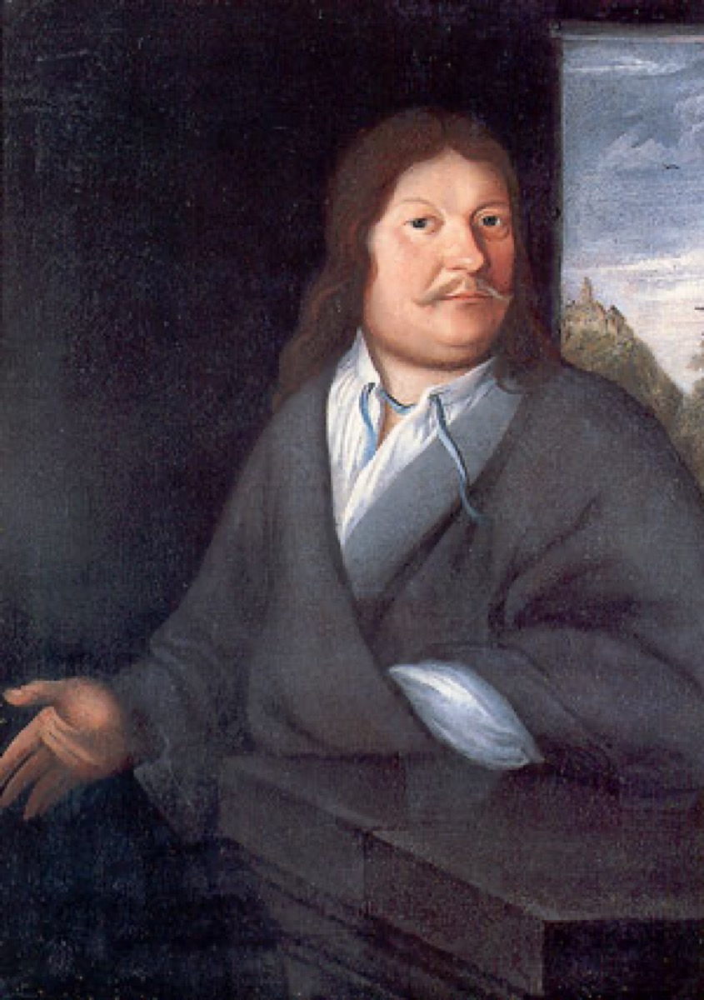

The clan: six generations of musical Bachs

In 1735, at the age of fifty, Johann Sebastian Bach sat down and wrote a family history. He called it Ursprung der musicalisch-Bachischen Familie — "Origin of the Musical Bach Family" — and in it he traced fifty-three musical Bachs back to a single ancestor: Veit Bach, a sixteenth-century baker who, in the family's founding legend, carried his cittern to the mill and played while the wheel ground his grain. The legend is a legend, and Bach records it as one. But the document itself, kept and annotated after his death by his son Emanuel, is the best window we have into how Bach understood himself — and what it shows is startling for anyone raised on the Romantic image of the solitary genius. He did not see himself as a miracle. He saw himself as the ripest fruit of a family enterprise, entry number twenty-four in a ledger of working musicians, and he took the trouble, at the height of his powers, to write the ledger down.
The enterprise deserves the businesslike word. The clan operated like a guild within the guilds: fathers trained sons and nephews in the family workshop; posts as organist, cantor, or town musician across Thuringia passed along kin networks, one Bach recommending or succeeding another; and the whole system was so dense on the ground that town musicians in the region were sometimes called "the Bachs" whether or not they were related. The name had stopped being merely a name and become a job description. Into this network Sebastian was born as an heir is born into a firm — with the training methods, the professional connections, and the accumulated repertoire of six generations already banked in his favor.
Once a year, the scattered firm assembled. The family reunion reportedly opened with a chorale and ended with improvised comic quodlibets — songs that stitch several tunes together at once, so that counterpoint, the learned art of combining melodies, doubled as the family joke. It is worth holding onto that image: the discipline that would culminate in the most rigorous polyphony ever written was also, in this family, what you did after dinner for laughs. Remember it when, near the end of the timeline, you meet the quodlibet that closes the Goldberg Variations — an old man's affectionate glance back at the table where he learned that rigor and play were the same thing.
Among the dozens of competent journeymen in the ledger, one figure towered, and the family knew it. Cousin Johann Christoph Bach (1642–1703) was organist at Eisenach's Georgenkirche — the church where Sebastian was baptized — and his motets and his lament Ach, dass ich Wassers gnug hätte carry an expressive chromatic daring that nothing else in the family approached. The Obituary calls him "profound," and the word repays attention: it is the family's own term for its own pre-Sebastian summit, the acknowledgment that one of their number had already crossed from craft into something else. For a boy growing up in that town, the cousin at the organ was standing proof that the trade had an upper register.
All of this reframes the question people instinctively ask about Bach — where did it come from? — into a better one: what did it come through? His staggering fluency was infrastructure before it was inspiration. The methods for teaching a child keyboard and counterpoint, the network that would place him in posts, the shelves of repertoire to copy and absorb: all of it existed before he did, built and maintained by six generations of Bachs who never wrote a masterpiece. Nurture had stacked the deck for a hundred years; then nature dealt Sebastian. Neither half of that sentence works without the other, and the genealogy he wrote at fifty suggests he knew it.
Continue with the era essay: Eisenach: born into the guild, or hear the family joke grown monumental: the Goldberg Variations.
Bach's own 'Origin of the Musical Bach Family' genealogy, 1735 (New Bach Reader)
Wolff, The Learned Musician, ch. 1
→ full bibliography & links